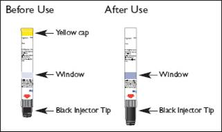
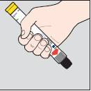
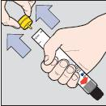
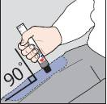
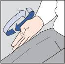

RÉSUMÉ DES CARACTÉRISTIQUES DU PRODUIT
ANSM - Mis à jour le : 21/05/2014
JEXT 150 microgrammes, solution injectable en stylo prérempli
2. COMPOSITION QUALITATIVE ET QUANTITATIVE
Un stylo pré-rempli délivre une dose de 0,15 ml de solution injectable contenant 150 microgrammes d'adrénaline (sous forme de tartrate).
1 ml de solution contient 1 mg d'adrénaline (sous forme de tartrate).
Excipients: métabisulfite de sodium (E223) et chorure de sodium.
Ce médicament contient moins de 1 mmol de sodium (23 mg) par dose.
Pour la liste complète des excipients, voir rubrique 6.1.
Solution injectable en stylo pré-rempli.
Solution limpide et incolore.
4.1. Indications thérapeutiques
JEXT est indiqué dans le traitement d'urgence des réactions allergiques aiguës graves (chocs anaphylactiques) provoquées par des piqûres ou des morsures d'insectes, des aliments, des médicaments ou d'autres allergènes, ainsi que du choc anaphylactique induit par un exercice physique ou idiopathique.
4.2. Posologie et mode d'administration
Posologie
Population pédiatrique
Patients de 15 à 30 kg: La dose usuelle est de 150 microgrammes.
L'utilisation n'est pas recommandée chez des enfants pesant moins de 15 kg sauf en cas de risque vital ou de décision du médecin; une dose inférieure à 150 microgrammes ne pouvant être administrée avec précision chez ces enfants.
Il est recommandé d'utiliser JEXT 300 microgrammes chez les enfants et les adolescents de plus de 30 kg.
Une première dose doit être administrée sans attendre, dès l'apparition des premiers signes et symptômes du choc anaphylactique.
La dose habituellement efficace se situe entre 0,005 et 0,01 mg/kg mais des doses supérieures peuvent être nécessaires dans certains cas.
Une seconde injection avec un nouveau dispositif de JEXT peut être nécessaire 5-15 minutes après la première injection, dans le cas où les symptômes persistent ou s'aggravent.
Mode d'administration
Voie intramusculaire.
A usage unique
L'injection de JEXT doit être effectuée en intramusculaire uniquement dans la partie antérolatérale de la cuisse. Elle peut être pratiquée au travers des vêtements ou directement à travers la peau. La zone d'injection peut être massée afin d'accélérer l'absorption.
Voir la rubrique 6.6 pour plus de détails sur les instructions d'utilisation.
Il n'y a aucune contre-indication absolue à l'utilisation de JEXT en cas d'urgence allergique.
4.4. Mises en garde spéciales et précautions d'emploi
Ne pas enlever le bouchon jaune avant utilisation.
Jext doit être exclusivement administré dans la face antérolatérale de la cuisse. Le produit est injecté immédiatement, par simple pression de l’extrémité noire contenant l’aiguille contre la peau. Le patient doit être informé de ne pas injecter Jext dans le muscle fessier en raison du risque d’injection accidentelle dans une veine.
Le patient doit être informé qu’un suivi médical est indispensable après administration et qu’il doit donc composer le numéro d’appel d’urgence 15 (ou le numéro international 112) pour demander l’intervention du SAMU en précisant « anaphylaxie ». Le patient doit être pris en charge par une équipe de soins d'urgence immédiatement après l'administration de la première dose afin de bénéficier d'une surveillance médicale attentive de l'épisode anaphylactique et recevoir un traitement complémentaire si nécessaire.
Jext contient du métabisulfite de sodium et peut provoquer des réactions allergiques sévères telles que des réactions anaphylactiques ou un bronchospasme, en particulier chez les patients asthmatiques. Les patients sensibilisés aux sulfites doivent être soigneusement informés des circonstances dans lesquelles Jext doit être utilisé.
En raison d’un risque accru d’effets indésirables après l’administration d’adrénaline, des précautions particulières doivent être prises chez les patients souffrant de maladies cardiovasculaires telles que l’angine de poitrine, la cardiomyopathie obstructive, l’arythmie cardiaque, le cœur pulmonaire, l’athérosclérose et l’hypertension artérielle.
Des précautions particulières doivent également être prises chez les patients souffrant d’hyperthyroïdie, de phéochromocytome, de glaucome à angle fermé, d’insuffisance rénale sévère, d’adénome prostatique avec rétention vésicale, d’hypercalcémie, d’hypokaliémie et de diabète.
Des précautions doivent également être prises chez les personnes âgées et les femmes enceintes.
Une injection accidentelle dans la main ou le pied, peut par vasoconstriction provoquer une ischémie de l’extrémité du membre concerné.
Tous les patients pour lesquels Jext a été prescrit doivent être parfaitement informés et comprendre correctement les indications et les conditions d’utilisation du dispositif.
Une longue période peut s’écouler entre la délivrance de Jext et la survenue d’une réaction allergique nécessitant de l’adrénaline. Les patients doivent être informés de vérifier régulièrement Jext et de le remplacer avant la date d’expiration.
Ce médicament contient moins de 1 mmol de sodium (23 mg) par dose et est donc considéré sans sodium.
4.5. Interactions avec d'autres médicaments et autres formes d'interactions
Utiliser JEXT avec précaution chez les patients recevant des médicaments pouvant sensibiliser le cœur aux arythmies, y compris les digitaliques et la quinidine. Les effets de l'adrénaline peuvent être potentialisés par les antidépresseurs tricycliques, les inhibiteurs de la monoamine oxydase (inhibiteurs MAO) et les inhibiteurs de la catéchol-O-méthyl transférase (inhibiteurs COMT).
L'adrénaline inhibe la sécrétion d'insuline, augmentant ainsi la glycémie. Il peut être nécessaire pour les patients diabétiques recevant de l'adrénaline d'augmenter leur dose d'insuline ou de médicaments hypoglycémiants oraux.
L'effet alpha et bêta-stimulant peut être inhibé par l'utilisation concomitante d'agents alpha et bêta bloquants, ainsi que les médicaments parasympathomimétiques.
L'expérience clinique dans le traitement du choc anaphylactique durant la grossesse est limitée.
L'adrénaline ne doit être utilisée pendant la grossesse que si le bénéfice attendu justifie le risque potentiel pour le fœtus.
L'adrénaline n'est pas biodisponible par voie orale; l'adrénaline excrétée dans le lait maternel ne devrait pas avoir d'effets chez le nourrisson.
4.7. Effets sur l'aptitude à conduire des véhicules et à utiliser des machines
JEXT a une influence nulle ou négligeable sur l'aptitude à conduire ou à utiliser des machines.
En raison des symptômes consécutifs au choc anaphylactique, la conduite ou l'utilisation des machines n'est toutefois pas recommandée après l'administration d'adrénaline.
Le tableau suivant est fondé sur des données post-marketing de l'utilisation d'adrénaline. La fréquence n'a pas pu être estimée à partir des données disponibles.
|
Classes de systèmes d'organes |
Effets indésirable |
|
|
Troubles du métabolisme et de la nutrition |
Hyperglycémie, hypokaliémie, acidose métabolique |
|
|
Affections psychiatriques |
Anxiété, hallucinations |
|
|
Affections du système nerveux |
Maux de tête, sensation vertigineuse, tremblements, syncope |
|
|
Affections cardiaques |
Tachycardie, arythmie, palpitations, angine de poitrine, cardiomyopathie de stress |
|
|
Affections vasculaires |
Hypertension, vasoconstriction, ischémie périphérique |
|
|
Affections respiratoires, thoraciques et médiastinales |
Bronchospasme |
|
|
Affections gastro-intestinales |
Nausées, vomissements |
|
|
Troubles généraux et anomalies au site d'administration |
Hyperhidrose, asthénie |
Une ischémie périphérique a été rapportée après une injection accidentelle d'adrénaline dans la main ou le pied.
JEXT contient du métabisulfite de sodium et peut provoquer des réactions sévères de type allergique dont des réactions anaphylactiques ou un bronchospasme (voir section 4.4.: Mises en garde spéciales et précautions d'emploi).
Déclaration des effets indésirables :
La déclaration des effets indésirables suspectés d'être dus à un médicament après son autorisation est importante. Elle permet une surveillance continue du rapport bénéfice/risque du médicament. Il est demandé aux professionnels de santé de déclarer tout effet indésirable suspecté d'être du à un médicament au centre régional de pharmacovigilance dont ils dépendent et dont les coordonnées sont disponibles sur le site internet de l'ANSM.
Un surdosage ou une injection intravasculaire accidentelle d'adrénaline peut provoquer une hémorragie cérébrale et une arythmie ventriculaire par augmentation brusque de la pression artérielle. Des ischémies et des nécroses du myocarde ainsi que des anomalies rénales peuvent survenir. Un œdème pulmonaire dû à la vasoconstriction périphérique et à la stimulation cardiaque peut entraîner le décès.
Un œdème pulmonaire peut-être traité par des médicaments alpha-bloquants tel que la phentolamine. Les cas d'arythmies peuvent être traités par des médicaments bêtabloquants.
5. PROPRIETES PHARMACOLOGIQUES
5.1. Propriétés pharmacodynamiques
Classe pharmacothérapeutique: agents adrénergiques et dopaminergiques, adrénaline.
Code ATC: C01CA24.
L'adrénaline est une catécholamine stimulant le système nerveux sympathique (aussi bien les récepteurs alpha que bêta-adrénergiques) qui augmente la fréquence cardiaque, le débit cardiaque et la circulation coronaire.
Par son action stimulante des récepteurs bronchiaux bêta adrénergiques, l'adrénaline provoque une puissante bronchodilatation diminuant le sifflement respiratoire et la dyspnée.
5.2. Propriétés pharmacocinétiques
L'adrénaline est une catécholamine naturellement secrétée par la médullosurrénale en réponse à l'épuisement ou au stress. L'adrénaline est rapidement inactivée dans l'organisme, principalement par les enzymes hépatiques COMT et MAO. Le foie, riche en ces enzymes, est un important tissu de dégradation bien que non indispensable. La majorité d'une dose d'adrénaline est excrétée sous forme de métabolites par voie urinaire.
La demi-vie plasmatique est d'environ 2,5 minutes. Cependant, la vasoconstriction locale peut légèrement retarder l'absorption et les effets peuvent durer plus longtemps que ne le suggère la demi-vie plasmatique. Des massages autour du point d'injection sont recommandés pour accélérer l'absorption.
5.3. Données de sécurité préclinique
L'adrénaline est utilisée depuis de nombreuses années pour le traitement des réactions anaphylactiques. Il n'existe pas d'autre donnée préclinique utile au prescripteur ne figurant pas déjà dans le RCP.
Métabisulfite de sodium (E223)
Acide chlorhydrique (pour ajustement du pH)
Eau pour préparations injectables.
En l'absence d'études de compatibilité, ce médicament ne doit pas être mélangé avec d'autres médicaments.
6.4. Précautions particulières de conservation
Ne pas congeler.
6.5. Nature et contenu de l'emballage extérieur
Le stylo pré-rempli (à usage unique) est composé d'un auto-injecteur et d'une cartouche.
La cartouche en verre (de type 1) est fermée par un piston en caoutchouc gris sans latex et par un caoutchouc de bromobutyl sans latex serti par une capsule en aluminium anodisé.
L'auto-injecteur est en plastique.
Taille du conditionnement: 1 stylo pré-rempli.
6.6. Précautions particulières d’élimination et de manipulation
Jext est un stylo pré-rempli à usage unique destiné à faciliter l’injection.
L’extrémité noire du stylo pré-rempli est appliquée contre la face extérieure de la cuisse. Par simple pression, le piston pousse l’aiguille cachée à travers la membrane de l’injecteur noir dans le muscle et injecte la dose d’adrénaline.
JEXT peut être utilisé au travers des vêtements.
Jext 150 microgrammes contient 1,4 ml d’adrénaline à 1 mg/ml. Le stylo délivre une dose unique de 0,15 ml, soit 150 microgrammes d’adrénaline. Le volume résiduel (1,25 ml) présent dans le stylo après l’injection ne peut pas être administré ultérieurement.
Une petite bulle d'air peut être présente dans la solution. Elle n’a pas d’influence sur les modalités d’utilisation ou l’efficacité du produit.
Il est recommandé de suivre une démonstration sur la technique d’injection avec un médecin. Un « dispositif d’apprentissage Jext », sans aiguille, ni adrénaline, est disponible pour les patients ou le personnel soignant désirant s’entraîner.
Note : le capuchon jaune empêche l'activation du dispositif et doit être maintenu en place tant que l’injection n’est pas nécessaire. Ne jamais placer la main sur l’extrémité noire.
Avant utilisation Après utilisation Bouchon jaune Extrémité noire d’injection Extrémité noire d’injection Fenêtre Fenêtre


1. Tenez le stylo injecteur Jext dans votre main dominante (celle que vous utilisez pour écrire) avec votre pouce le plus près possible du bouchon jaune.

2. Retirez le bouchon jaune avec l’autre main.
3. Placez l’extrémité noire du stylo injecteur contre la face extérieure de votre cuisse, tenez l'injecteur à angle droit de la cuisse (environ 90°).
4. Pressez fermement l’extrémité noire contre l’extérieur de votre cuisse jusqu'à ce que vous entendiez le déclic confirmant le début de l'injection, maintenez le en position. Tenez fermement l'injecteur en place contre la cuisse pendant 10 secondes (comptez lentement jusqu’à 10) puis retirez. L’extrémité noire s’étire automatiquement pour recouvrir l'aiguille.

5. Massez la zone d’injection pendant 10 secondes. Recherchez immédiatement une aide médicale. Composez le 15 (ou le numéro international 112) et demandez l’intervention du SAMU en précisant « anaphylaxie ».
Les produits périmés doivent être détruits selon les exigences locales.
Vérifier régulièrement la solution au travers de la fenêtre de contrôle pour s’assurer que le liquide est toujours clair et incolore.
La solution prend une couleur plus foncée si elle est exposée à l’air ou à la lumière.
Si la solution est décolorée ou contient un précipité, ou au plus tard à la date d’expiration, le produit doit être remplacé et remis à un pharmacien.
Jext ne doit pas être utilisé après la date d’expiration indiquée sur l’étiquetage.
7. TITULAIRE DE L’AUTORISATION DE MISE SUR LE MARCHE
ALK-ABELLO A/S
BOGE ALLE 6-8
2970 HORSHOLM
DANEMARK
8. NUMERO(S) D’AUTORISATION DE MISE SUR LE MARCHE
· 498 549-3 ou 34009 498 549 3 6: 1 dose de 0.15 ml en cartouche (verre) dans un stylo prérempli. Boîte de 1 stylo prérempli.
9. DATE DE PREMIERE AUTORISATION/DE RENOUVELLEMENT DE L’AUTORISATION
[à compléter par le titulaire]
10. DATE DE MISE A JOUR DU TEXTE
[à compléter par le titulaire]
Sans objet.
12. INSTRUCTIONS POUR LA PREPARATION DES RADIOPHARMACEUTIQUES
Sans objet.
Liste I.